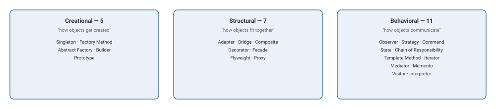

Design Patterns
All 23 classic Gang of Four patterns, grouped into three families by what problem they solve. Unlike the HLD and LLD-foundations tracks, there's no required order here — each pattern stands alone, so browse by category or jump straight to a name you already recognize.
What You'll Learn
Every pattern page follows the same shape: theory and a UML-style diagram, when to actually reach for it (and when not to), real-world examples from libraries and frameworks you've likely used, interview questions, and working code in Java, Python, JavaScript, and C++.

Creational — how objects get created
Structural — how objects fit together
Adapter
Make an incompatible interface fit
Bridge
Split abstraction from implementation
Composite
Treat one object and a group the same way
Decorator
Add behavior without subclassing
Facade
One simple interface over a complex system
Flyweight
Share state to support huge numbers of objects
Proxy
A stand-in that controls access to the real thing
Behavioral — how objects communicate
Observer
Notify many listeners when one thing changes
Strategy
Swap an algorithm at runtime
Command
Turn a request into an object you can queue or undo
State
Behavior changes as an object's state changes
Chain of Responsibility
Pass a request along a chain of handlers
Template Method
Fix the skeleton, let subclasses fill in steps
Iterator
Walk a collection without exposing its internals
Mediator
Objects talk through a hub, not each other
Memento
Capture and restore an object's state
Visitor
Add operations without changing the classes
Interpreter
Evaluate sentences in a small custom language